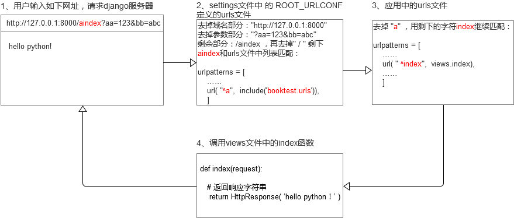

URL配置
- 在浏览器的地址栏中输入网址请求网站，url匹配网址，找到对应的视图函数
- url配置的目的是建立url和视图函数的对应关系。
URL配置过程
1、settings.py中，指定入口urls文件(项目创建时自动配置的)
ROOT_URLCONF = '项目.urls'
2.在项目中urls.py中，包含到应用的urls.py
url(正则, include('应用.urls'))
3.应用中urls.py中，调用views.py对应的函数
url(正则, views.函数名)
URL函数
url函数有两个参数，第一个参数是一个正则表达式，第二个是对应的处理动作。配置url时，有两种语法格式：
- a) url(正则表达式，视图函数名)
- b) url(正则表达式，include(应用中的urls文件))
URL匹配过程

正则书写规则
- 推荐使用r，表示字符串不转义，这样在正则表达式中使用\只写一个就可以
- 不能在开始加反斜杠，因为在截取url时会自动去掉前面的反斜杠再和正则匹配，如果在正则前面加反斜杠就匹配不上了。
正确：index/ 正确：index 错误：/index 错误：/index/
URL中取值
如果想从URL中获取值，需要在正则表达式中使用分组，获取值分为两种方式
- 位置参数 参数的位置不能错
- 关键字参数 参数的位置可以变，跟关键字保持一致即可
注意：两种参数的方式不要混合使用，在一个正则表达式中只能使用一种参数方式
例：分别使用以上两种获取URL值的方式提取出18 188
http://127.0.0.1:8000/18/188/
使用位置参数
urls配置：
url(r'^(\d+)/(\d+)/$', views.index)
视图中配置：
def index(request, value1, value2):
context = {'v1':value1, 'v2':value2}
return render(request, 'booktest/index.html', context)
使用关键字参数
urls配置：
url(r'^(?P<canshu1>\d+)/(?P<canshu2>\d+)/$', views.index),
视图中配置：
def index(request, canshu2, canshu1):
context = {'v1':canshu1, 'v2':canshu2}
return render(request, 'booktest/index.html', context)